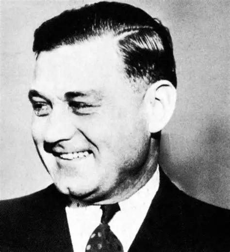
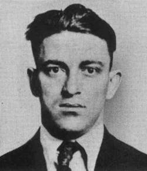

After Colosimo's murder, Torrio seized full control, made Capone his right-hand man, and further on continued to feed Capone's rise in serious crime.
After Colosimo's murder, Torrio seized full control, made Capone his right-hand man, and further on continued to feed Capone's rise in serious crime.Shortly after Capone arrives in Chicago, James "Big Jim" Colosimo, a crime boss who was Torrio's uncle by marriage. Torrio, Colosimo's trusted right-hand man, helped run Colosimo's gambling brothel business, yet while Colosimo was the boss, Torrio handled the day-to-day operations. In 1920, Colosimo was assassinated by either Capone or Yale, or one of Torrio's henchmen.
After Colosimo's murder, Torrio seized full control, made Capone his right-hand man, and further on continued to feed Capone's rise in serious crime.
As the Prohibition began, new bootlegging operations opened up and drew in immense wealth, to which Capone took full advantage of the opportunities that the Prohibition offered. During these years, Torrio and Capone formed a partnership that would shape the future of organized crime. They conducted a plan to organize Chicago's rival gangs into a cooperative cartel where they all could benefit with maximum profit with minimum strife. Capone also indulged in many various crimes, such as:
With the Roaring Twenties and Prohibition, Chicago became more corrupt, bribery and payoffs became easier, and overall, it was the perfect breeding ground for organized crime, bringing many opportunities for gangsters.
After Torrio survived an assassination attempt in 1925 that left him seriously wounded, Torrio surrendered his control and moved back to Brooklyn and retired. With that, Capone officially took control of Chicago's criminal operations and became boss. With Torrio gone, Capone's power and influence grew rapidly, and his reputation became legendary. He was known for his brutality, his stylish appearance, luxury cars, charisma, and wealth, mainly from bootlegging and his various other sources of income that were estimated to be about 60 million dollars during the 1920s and of course his scars on his face, and the "Scarface" nickname that remained people of his violent past, that he could not shake. While he was both feared and respected by rival gangsters and Law enforcement, he also cultivated a public persona, with his stylish look, sometimes charity work that earned him a "Robin Hood" image in certain neighborhoods, and Capone became a celebrity and even beloved.
As more time went on, Violence and blood only grew stronger, yet the police and Capone's fans didn't seem bothered as long as it was only gangsters being murdered, but Capone cared, had to watch out, or he would be next. He would face with assassinations attempts, being shot at, rumors of attempts at poisoning him, to which he had to have a food taster. While he was seen as this big, powerful boss, untouchable by the law, flourishing, yet it was not all out to be what it was, he was wary of enemies and rivals, especially two men Capone feared most, the same men who tried to kill Torrio, George "Bugs" Moran, and Hymie Weiss.
Capone knew he had to take the upper hand; Weiss was a man not afraid of death and would not stop until he killed Capone, after shooting up a street where Capone was drinking coffee. Capone would end Weiss's life in 1926.  With Moran left, Capone decided to play his cards in 1929.
One of Capone's most famous gang acts was the 1929,Valentine's Day Massacre. On the morning of February 14, 1929, Capone's gang would enter a garage on 2122 North Clark Street run by members of Moran's gang, and with Moran arriving for a meeting, Capone's hit men, disguised as Chicago policemen, went into action. Moran's members were lined up against a wall and were shot in cold blood. One mistake though Moran was not one of the victims; Moran was late for his meeting due to a barbershop appointment that turned out to save his life. Moran became frightened by the massacre; Moran would face decline due to being outmatched by Capone's empire and growing dominance over Chicago.